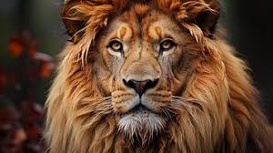
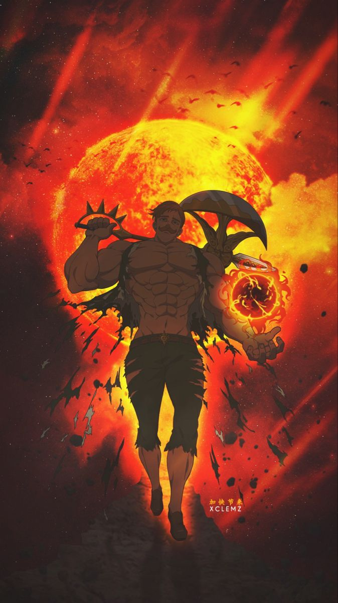
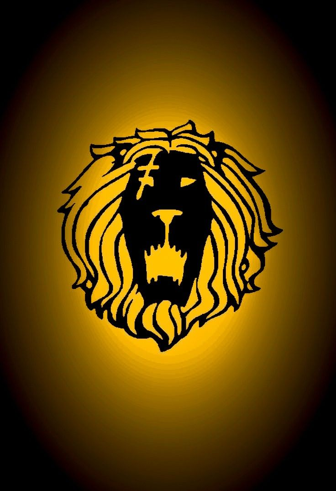

Resumo de CSS
Que significa Cascading Style Sheets ou Folhas de Estilo em Cascata, é uma linguagem usada para definir a aparência e o layout de páginas web construídas em HTML. Permite estilizar elementos como fontes, cores, tamanhos, espaçamentos e muito mais, separando o conteúdo do seu visual.




